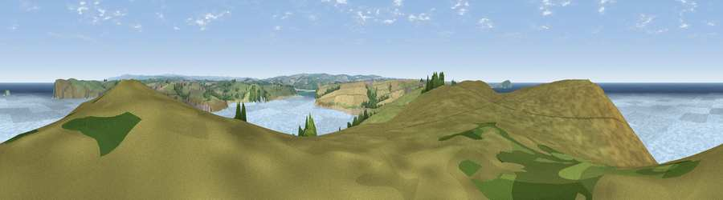

Viewpoint near Trebetherick
#5276 in England · top 15% of its area beats it · near TrebetherickWhere it is
The exact computed spot (SW 91250 78325). Click the marker for map links.
The view, rendered

A 360° render of this exact spot computed from the terrain model, tree cover and land cover — summer colours, afternoon light, calibrated against photographs of famous viewpoints. Real trees, hedges and buildings will differ in detail.
The panorama
Grey silhouette: terrain skyline in each direction (720 bearings, Earth curvature and refraction included). Dashed green: skyline with trees (+15 m) and buildings (+8 m) as obstacles. Blue strip: how far the ground is visible on each bearing.
Where the view opens
Wedge length = distance to the farthest visible ground on that bearing (vegetation-aware). Rings at 10, 25 and 50 km.
What fills the view
54% water · 37% grassland · 6% cropland · 2% woodland ·
Angular shares of the visible panorama (visual magnitude), not map area. Landscape diversity 0.44 (0–1 Shannon).
Key numbers
More beautiful places nearby
The staircase of upgrades: each row has a higher view potential than everything closer. Driving times are estimates from straight-line distance, calibrated against real road routing — check an actual route before setting out.
| Place | Direction | Drive | Score |
|---|---|---|---|
| Viewpoint near Trevone | SW · 1 km | ~3 min | 72.3 |
| Viewpoint near New Polzeath | NE · 3 km | ~8 min | 75.8 |
| Viewpoint near Port Isaac | ENE · 6 km | ~14 min | 76.5 |
| Viewpoint near Port Isaac | E · 8 km | ~16 min | 77.8 |
| Viewpoint near St Eval | S · 11 km | ~21 min | 78.3 |
| Viewpoint near Port Isaac | ENE · 12 km | ~22 min | 79.7 |
| Viewpoint near Boscastle | NE · 20 km | ~34 min | 82.0 |
| Viewpoint near Boscastle | NE · 21 km | ~35 min | 84.3 |
50.56729, -4.94913 · source: screening · position refined by local search. Computed location — check access rights before visiting.